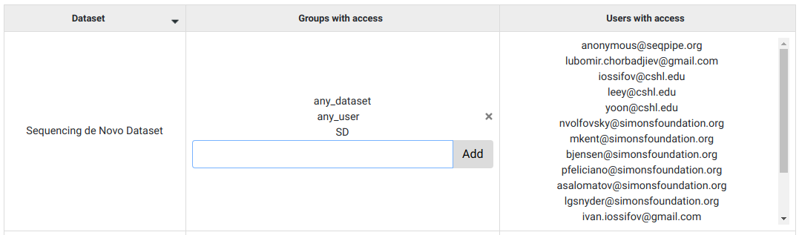

Datasets¶
In the Datasets tab on the Management menu, GUI users can observe information about which users have access to a dataset or which groups does a dataset belong to.
Adding group to a dataset¶
In the Datasets tab, by typing group names in the text bar in the ‘Groups with access’ column, and then clicking ‘Add’, existing groups can be assigned to datasets.
